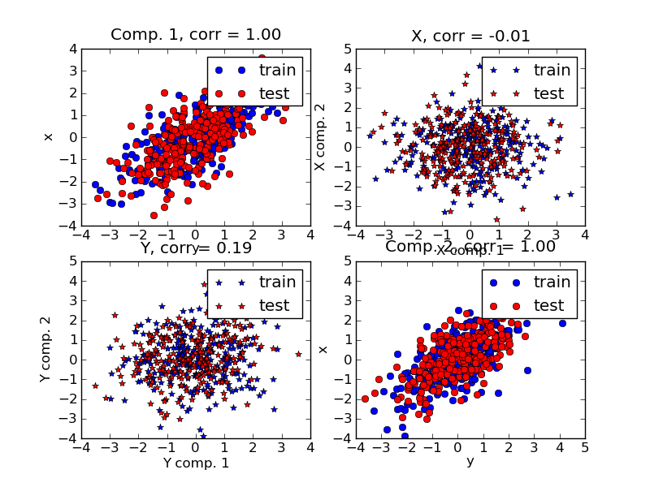

PLS Partial Least Squares¶
Simple usage of various PLS flavor: - PLSCanonical - PLSRegression, with multivariate response, a.k.a. PLS2 - PLSRegression, with univariate response, a.k.a. PLS1 - CCA
Given 2 multivariate covarying two-dimensional datasets, X, and Y, PLS extracts the ‘directions of covariance’, i.e. the components of each datasets that explain the most shared variance between both datasets. This is apparent on the scatterplot matrix display: components 1 in dataset X and dataset Y are maximaly correlated (points lie around the first diagonal). This is also true for components 2 in both dataset, however, the correlation across datasets for different components is weak: the point cloud is very spherical.

Python source code: plot_pls.py
import numpy as np
import pylab as pl
from scikits.learn.pls import PLSCanonical, PLSRegression, CCA
################################################################################
# Dataset based latent variables model
n = 500
# 2 latents vars:
l1 = np.random.normal(size=n)
l2 = np.random.normal(size=n)
latents = np.array([l1, l1, l2, l2]).T
X = latents + np.random.normal(size=4*n).reshape((n, 4))
Y = latents + np.random.normal(size=4*n).reshape((n, 4))
X_train = X[:n/2, :]
Y_train = Y[:n/2, :]
X_test = X[n/2:, :]
Y_test = Y[n/2:, :]
print "Corr(X)"
print np.round(np.corrcoef(X.T), 2)
print "Corr(Y)"
print np.round(np.corrcoef(Y.T), 2)
################################################################################
# Canonical (symetric) PLS
# Transform data
# ~~~~~~~~~~~~~~
plsca = PLSCanonical()
plsca.fit(X_train, Y_train, n_components=2)
X_train_r, Y_train_r = plsca.transform(X_train, Y_train)
X_test_r, Y_test_r = plsca.transform(X_test, Y_test)
# Scatter plot of scores
# ~~~~~~~~~~~~~~~~~~~~~~
# 1) on diagonal plot X vs Y scores on each components
pl.subplot(221)
pl.plot(X_train_r[:, 0], Y_train_r[:, 0], "ob", label="train")
pl.plot(X_test_r[:, 0], Y_test_r[:, 0], "or", label="test")
pl.xlabel("y")
pl.ylabel("x")
pl.title('Comp. 1, corr = %.2f' %
np.corrcoef(X_test_r[:, 0], X_test_r[:, 0])[0, 1])
pl.legend()
pl.subplot(224)
pl.plot(X_train_r[:, 1], Y_train_r[:, 1], "ob", label="train")
pl.plot(X_test_r[:, 1], Y_test_r[:, 1], "or", label="test")
pl.xlabel("y")
pl.ylabel("x")
pl.title('Comp. 2, corr = %.2f' %
np.corrcoef(X_test_r[:, 1], X_test_r[:, 1])[0, 1])
pl.legend()
# 2) Off diagonal plot components 1 vs 2 for X and Y
pl.subplot(222)
pl.plot(X_train_r[:, 0], X_train_r[:, 1], "*b", label="train")
pl.plot(X_test_r[:, 0], X_test_r[:, 1], "*r", label="test")
pl.xlabel("X comp. 1")
pl.ylabel("X comp. 2")
pl.title('X, corr = %.2f' % np.corrcoef(X_test_r[:, 0], X_test_r[:, 1])[0, 1])
pl.legend()
pl.subplot(223)
pl.plot(Y_train_r[:, 0], Y_train_r[:, 1], "*b", label="train")
pl.plot(Y_test_r[:, 0], Y_test_r[:, 1], "*r", label="test")
pl.xlabel("Y comp. 1")
pl.ylabel("Y comp. 2")
pl.title('Y, corr = %.2f' % np.corrcoef(Y_test_r[:, 0], Y_test_r[:, 1])[0, 1])
pl.legend()
pl.show()
################################################################################
# PLS regression, with multivariate response, a.k.a. PLS2
n = 1000
q = 3
p = 10
X = np.random.normal(size=n * p).reshape((n, p))
B = np.array([[1, 2] + [0] * (p - 2)] * q).T
# each Yj = 1*X1 + 2*X2 + noize
Y = np.dot(X, B) + np.random.normal(size=n * q).reshape((n, q)) + 5
pls2 = PLSRegression()
pls2.fit(X, Y, n_components=3)
print "True B (such that: Y = XB + Err)"
print B
# compare pls2.coefs with B
print "Estimated B"
print np.round(pls2.coefs, 1)
pls2.predict(X)
################################################################################
# PLS regression, with univariate response, a.k.a. PLS1
n = 1000
p = 10
X = np.random.normal(size=n*p).reshape((n, p))
y = X[:, 0] + 2 * X[:, 1] + np.random.normal(size=n * 1) + 5
pls1 = PLSRegression()
pls1.fit(X, y, n_components=3)
# note that the number of compements exceeds 1 (the dimension of y)
print "Estimated betas"
print np.round(pls1.coefs, 1)
################################################################################
# CCA (PLS mode B with symetric deflation)
cca = CCA()
cca.fit(X_train, Y_train, n_components=2)
X_train_r, Y_train_r = plsca.transform(X_train, Y_train)
X_test_r, Y_test_r = plsca.transform(X_test, Y_test)